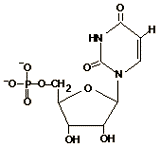
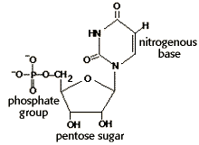
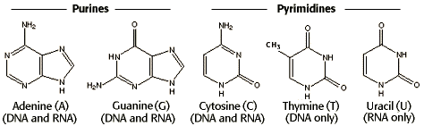

Large Molecules Problem Set
Problem 6: Identification of a monomer unit of a biological macromolecule
Tutorial to help answer the question
The structure shown in the diagram is an example of a monomer unit used in the formation of:
|
 |
A. RNA |
Tutorial
Nucleotides
|
The molecule illustrated in the question is a nucleotide. Nucleotides, the monomer units of RNA and DNA, consist of a pentose sugar, either ribose in RNA
or deoxyribose in DNA, a phosphate group, and a nitrogenous base.
As the name implies, a pentose is a 5-membered, puckered ring. Attached to the ring is the phosphate group, which is a phosphorous atom with 4 covalently attached oxygen atoms. Nucleotides also have either a pyrimidine or purine base, attached to the pentose sugar. |
 |
Nitrogenous bases: purines and pyrimidines
| Pyrimidines are planar, six-membered rings of 5 carbon and 1 nitrogen atom. Purines are planar, fused N-containing rings. The purine and pyrimidine bases of RNA and DNA are shown below. |
|  |
DNA and RNA
| RNA and DNA are polymers of nucleotides. The backbone of the polymer is a repeating chain of sugar-phosphate-sugar-phosphate- etc. These polymers have "polarity", meaning having a directionality. The phosphate of the 5'-end of one nucleotide is linked to the 3'-position of the next nucleotide. In the model of DNA (left), the left strand has a polarity of 5' (top) to 3' (bottom), and the other DNA strand has the opposite polarity. The two DNA strands are said to be "antiparallel". |

|
| In the RNA model, note the extra -OH of the pentose sugar, and the use of the uracil base (U) rather than the thymine (T) base of DNA. |


Department of Biochemistry and Molecular Biophysics
The University of Arizona
Revised: January 30, 2003
Contact the Development Team
http://www.biology.arizona.edu
All contents copyright © 1996-2003.
All rights reserved.